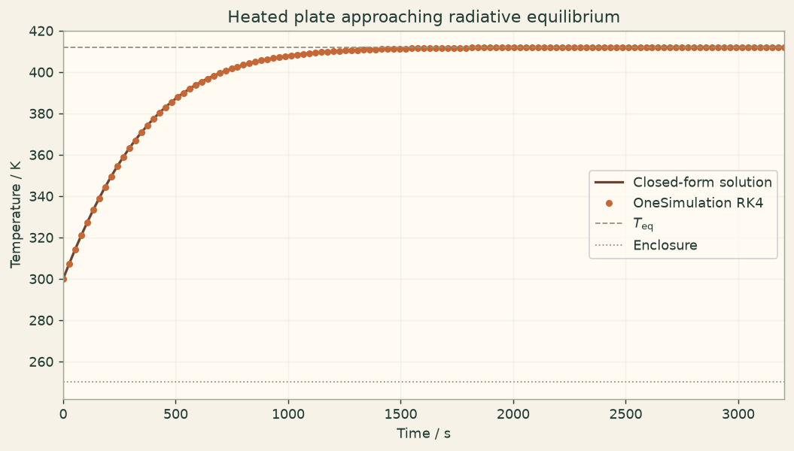

Docs › Examples › Radiative equilibrium of a heated body
Heat transfer · 0D
Radiative equilibrium of a heated body
A heated body radiating to a cold surrounding settles at its radiative equilibrium, graded against the Stefan-Boltzmann balance.

What it computes
OneSimulation integrates a lumped thermal mass with a constant heating power and grey-diffuse radiation to the ambient.
What it checks
The equilibrium temperature matches (T_amb^4 + P/(eps sigma A))^(1/4) within about 1e-3 K, and the implicit transient t(T) is reproduced to about 1e-6 s.
The notebook
The complete notebook, cell by cell. Run it to produce the figures and the comparison printout.
A thin plate with total heat capacity \(C\) receives a constant heating power \(P\) (for example from an embedded heater or absorbed radiation) and loses heat only by grey radiation from its surface of area \(A\) and emissivity \(\varepsilon\) to a cold enclosure at \(T_\mathrm{amb}\). For a thin, well-conducting plate the interior stays uniform, so one temperature \(T(t)\) describes it:
OneSimulation treats this as a zero-dimensional (lumped) radiation model and integrates it in time with the classical fourth-order Runge-Kutta method.
Reference. In the steady state the heating balances the net radiation,
and the transient also has a closed form. Writing the balance as \(C\,dT/dt=\varepsilon\sigma A\,(T_\mathrm{eq}^4-T^4)\) and separating variables gives the time at which the plate reaches a temperature \(T\):
We check the final temperature against \(T_\mathrm{eq}\) and every stored temperature against this implicit solution.
from importlib.metadata import version
import numpy as np
import matplotlib.pyplot as plt
from onesim.cad.geometry import LumpedDomain
from onesim.meshing import LumpedMesh
from onesim.numerics import Numerics
from onesim.numerics.discretization import LumpedParameters
from onesim.numerics.time import ClassicalRungeKutta4
from onesim.physics.heat_transfer import RadiationCooling, ThermalGreyDiffuseRadiationBoundary
from onesim.results.storage import MemoryOutputSink, Output
from onesim.simulation import Problem, Simulation
from onesim.simulation.initial_conditions import InitialValue
print("OneSimulation:", version("onesimulation"))Parameters and model
The parameters can be changed. The reference formulas stay valid as long as the heat capacity, radiating area, emissivity, heating power and enclosure temperature are constant. The values describe an anodised aluminium plate of about 0.2 m x 0.125 m x 3 mm radiating from both faces into a cold enclosure.
heat_capacity = 180.0 # J/K, total heat capacity C
area = 0.05 # m², radiating area A (both faces)
emissivity = 0.85 # dimensionless
heating_power = 60.0 # W, constant heating P
ambient_temperature = 250.0 # K, cold enclosure
initial_temperature = 300.0 # K, plate temperature at t = 0
sigma = 5.670374419e-8 # W/(m²·K⁴)
T_eq = (ambient_temperature**4 + heating_power / (emissivity * sigma * area)) ** 0.25
# Linearised radiative time constant around the equilibrium.
time_constant = heat_capacity / (4.0 * emissivity * sigma * area * T_eq**3)
end_time = 12.0 * time_constant
time_step = 0.02 * time_constant
print(f"equilibrium temperature T_eq = {T_eq:.2f} K, linearised time constant = {time_constant:.1f} s")
domain = LumpedDomain()
radiation = ThermalGreyDiffuseRadiationBoundary(
condition_id="plate-radiation",
emissivity=emissivity,
ambient_temperature=ambient_temperature,
)
model = RadiationCooling(
domain=domain.system,
heat_capacity=heat_capacity,
radiating_area=area,
radiation=radiation,
heating_power=heating_power,
)
simulation = Simulation(
problem=Problem(
name="Radiative equilibrium of a heated plate",
geometry=domain,
physics=(model,),
initial_conditions=(InitialValue(model.temperature, initial_temperature),),
),
mesh=LumpedMesh(domain),
numerics=Numerics(
spatial=LumpedParameters(),
time_integrator=ClassicalRungeKutta4(),
),
)
simulation.validate().require_valid()
sink = MemoryOutputSink()
result = simulation.run(
start_time=0.0,
end_time=end_time,
time_step=time_step,
output=Output(
fields=(model.temperature, model.radiated_power),
interval=5.0 * time_step,
sink=sink,
),
)
times = np.asarray([float(s.time) for s in sink.snapshots])
temperatures = np.asarray([
float(np.asarray(s.fields[model.temperature.field_id].values).reshape(-1)[0])
for s in sink.snapshots
])
powers = np.asarray([
float(np.asarray(s.fields[model.radiated_power.field_id].values).reshape(-1)[0])
for s in sink.snapshots
])Comparison with the closed-form solution
First the steady state: after twelve linearised time constants the plate must sit at \(T_\mathrm{eq}\) and its net radiated power must equal the heating power. Then the transient: for every stored temperature on the way up the implicit solution \(t(T)\) must reproduce the stored time (the last kelvin below \(T_\mathrm{eq}\) is excluded, where \(t(T)\) becomes logarithmically sensitive to round-off). A passing check shows that this numerical example agrees with the radiative energy balance; it is not an experimental validation of a real plate.
def arrival_time(T):
F = lambda x: np.log((T_eq + x) / (T_eq - x)) + 2.0 * np.arctan(x / T_eq)
return heat_capacity / (4.0 * emissivity * sigma * area * T_eq**3) * (F(T) - F(initial_temperature))
final_temperature = temperatures[-1]
equilibrium_error = abs(final_temperature - T_eq)
net_radiation = powers[-1] # the model reports the net flux eps*sigma*A*(T^4 - T_amb^4)
print(f"Final temperature: {final_temperature:.4f} K (T_eq = {T_eq:.4f} K, |dT| = {equilibrium_error:.2e} K)")
print(f"Net radiated power at the end: {net_radiation:.4f} W (heating {heating_power:.1f} W)")
interior = (temperatures > initial_temperature) & (temperatures < T_eq - 1.0)
time_errors = np.abs(arrival_time(temperatures[interior]) - times[interior])
max_time_error = float(np.max(time_errors))
print("Transient check (implicit closed form):")
for t, T, err in list(zip(times[interior], temperatures[interior], time_errors))[::8]:
print(f" t={t:8.1f} s T={T:8.3f} K |t(T)-t|={err:.2e} s")
print(f"Maximum time error against the implicit solution: {max_time_error:.2e} s ({100*max_time_error/time_step:.3f} % of the time step)")Figure
fig, ax = plt.subplots(figsize=(8, 4.5), constrained_layout=True)
fig.patch.set_facecolor("#fbf5eb")
ax.set_facecolor("#fffaf2")
dense_T = np.linspace(initial_temperature, T_eq * (1 - 1e-6), 600)
ax.plot(arrival_time(dense_T), dense_T, color="#6b442f", lw=1.8, label="Closed-form solution")
ax.plot(times, temperatures, "o", color="#c56838", ms=4, label="OneSimulation RK4")
ax.axhline(T_eq, color="#9a8f7d", ls="--", lw=1.0, label=r"$T_\mathrm{eq}$")
ax.axhline(ambient_temperature, color="#9a8f7d", ls=":", lw=1.0, label="Enclosure")
ax.set(xlabel="Time / s", ylabel="Temperature / K",
title="Heated plate approaching radiative equilibrium",
xlim=(0, end_time))
ax.grid(alpha=0.25)
ax.legend()
plt.show()Going further
Halve the time step and confirm that the error shrinks as expected for a fourth-order method. Double the heating power and relate the new equilibrium to the fourth-root law. Lower the enclosure temperature towards 0 K: the equilibrium then depends on the heating alone, \(T_\mathrm{eq}=(P/\varepsilon\sigma A)^{1/4}\). Setting the heating power to zero recovers pure radiative cooling.